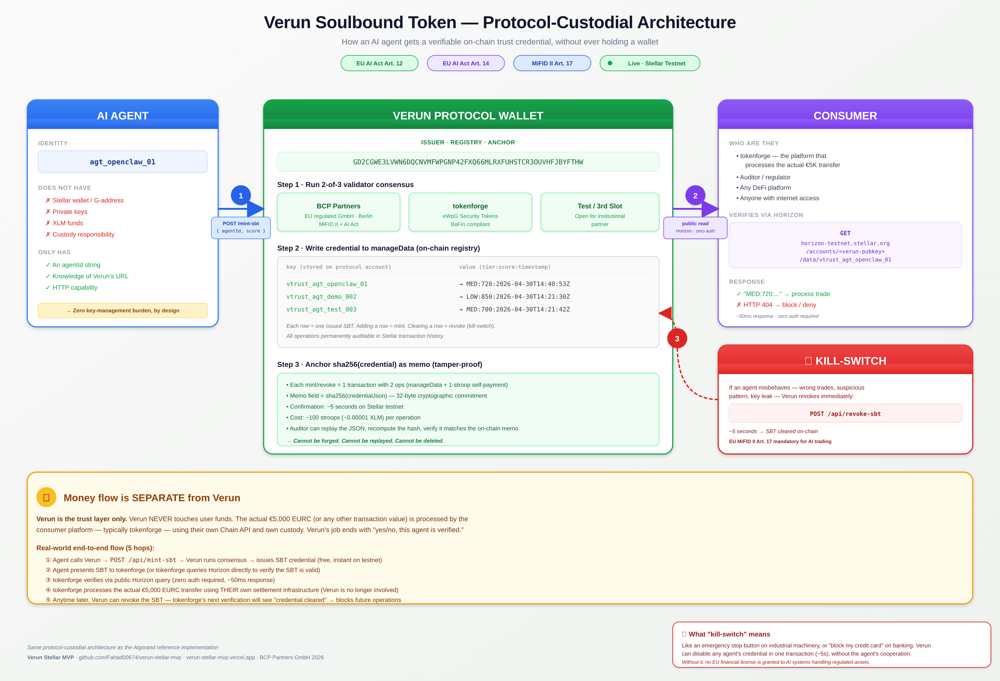

Verun Protocol — Stellar
Prototype on Stellar Testnet v0.1.0 · Design exploration · Not for production use
Early technical documentation for Verun Protocol — a design exploration of agentic trust infrastructure for European finance, prototyped on Stellar by BCP Partners GmbH. Intended to complement Erster, an EU tokenization platform in development.
Consensus-based Trust Scores (0–1000) intended to gate access to a regulated Chain API. Each evaluation is anchored as a Memo Transaction on Stellar Testnet. The design intent is to generate machine-readable audit trails that could complement MiFID II Art. 17 + EU AI Act Art. 14 obligations, subject to independent legal review.
Disclosure: Testnet prototype · design intent · not legally certified · not investment advice. Statements about partners, integrations and compliance alignment are exploratory and subject to confirmation. Independent legal review planned.
Overview
Verun is an early-stage trust infrastructure concept for AI agents operating in regulated European financial markets.
What is Verun?
As AI agents begin autonomously executing token transfers, minting securities, and placing investment orders, there is no widely-adopted standard for establishing who an agent is, whether it can be trusted, and whether it should be permitted to act in a regulated context.
Verun explores an approach: a Verun Agent Score (0–1000) — a consensus-based trust verdict, anchored on Stellar for every evaluation, that could feed into a regulated Chain API gate.
Key Facts (Prototype)
| Property | Value |
|---|---|
| Trust Score Range | 0 – 1000 (design) |
| Consensus Model | 2-of-N validator votes (ceil N/2) — prototype implementation |
| Anchor Chain | Stellar Testnet — Memo Transaction per evaluation |
| Settlement Layer | Stellar — intended to interoperate with eWpG / EURC settlement |
| Regulated Gate | tokenforge Chain API — exploratory integration |
| Fee Split (proposed) | 70% Protocol / 10% Validator / 10% Agent Kickback / 10% Reserve — not yet on-chain |
| Tokenization Platform | Erster — EU tokenization platform in development |
| Live URL | erster.fund |
3 Operating Modes
| Mode | Description |
|---|---|
| Discovery | Agent scans validated platforms, finds tokenforge, sends structured recommendation to human |
| Supervised | Human receives recommendation, approves with one click — agent executes single action |
| Autonomous | After human approval: agent executes fully automatically, every action anchored on-chain |
Architecture
In the prototype, three complementary layers are explored — Stellar for trust anchoring, a regulated Chain API gate (exploratory integration with tokenforge), and Stellar for settlement. No layer competes with another.
Layer Stack
Flow
Claude · MCP
Score + Consensus
Note Tx Anchor
Chain API Gate
eWpG · EURC
Fee Distribution
Trust Score Gates
In the design, each regulated Chain API capability is gated behind a minimum Trust Score. Scores are computed by validator consensus and anchored on Stellar Testnet. Exact thresholds and integration scope with tokenforge remain exploratory.
Score Tiers
| Tier | Score | Permitted Operations | Kickback |
|---|---|---|---|
| LOW | 800 – 1000 | All operations | 10% |
| MED | 600 – 799 | read, transfer, mint, order | 5% |
| HIGH | 300 – 599 | read, transfer, mint | 0% |
| BLOCK | 0 – 299 | None — access denied | 0% |
MiFID II + EU AI Act — Design Intent
Verun's design is informed by, and intended to complement, the audit obligations financial institutions already carry under MiFID II Art. 17 (algorithmic trading governance) and the EU AI Act (high-risk AI logging + human oversight). Nothing on this page is a compliance certification or legal opinion.
Design Mapping (exploratory)
| Article | Obligation (institution-side) | What Verun explores |
|---|---|---|
| MiFID II Art. 17 | Algorithmic trading governance + complete records | Every prototype evaluation is anchored on Stellar Testnet via Memo transaction. Score, consensus, operation, timestamp — recorded for replay. |
| EU AI Act Art. 14 | Human oversight of high-risk AI systems | Design supports human-in-the-loop approval above defined operation tiers; approval hash co-signed via Stellar multi-sig. |
| EU AI Act Art. 12 | Automatic logging of high-risk AI activity | Every verdict, approval, and revocation written to Stellar in the prototype — a replayable evaluation log. |
| MiFID II Art. 17(2) | Kill-switch / system controls | Prototype SBT revocation flow — credential can be burned by issuer, removing the agent's permissioned access in subsequent evaluations. |
Validator Model
Validators are envisioned as the institutional backbone of Verun. In the design, they provide the consensus votes required for every agent evaluation. The composition below describes the current testnet prototype.
Testnet Validators (Prototype)
Consensus Rules (prototype)
In the testnet prototype, a verdict requires ceil(N/2) matching votes from selected validators. With 3 validators: 2-of-3 required. UNAVAILABLE votes are excluded from the tally. If consensus cannot be reached, the evaluation returns BLOCK.
Validator Economics (proposed)
The proposed economic model allocates 10% of evaluation fees to validators via a fee-distribution mechanism. The on-chain fee contract is not yet deployed; this is a design proposal, subject to change.
API Reference (Testnet Prototype)
Base URL: https://erster.fund
GET /api/health
Service status and network confirmation.
{
"ok": true,
"service": "verun-stellar-mvp",
"network": "stellar-testnet"
}GET /api/validators
List all registered validators with metadata.
{
"validators": [
{
"id": "val-erster-01",
"name": "ERSTER",
"type": "internal",
"status": "active",
"policy": "score_based"
},
{
"id": "val-tokenforge-02",
"name": "tokenforge",
"type": "external",
"status": "active",
"policy": "chain_api_based",
"api": {
"type": "rest",
"network": "testnet",
"docs": "https://docs.tokenforge.io"
}
},
{
"id": "val-test-03",
"name": "Test Validator",
"type": "internal",
"status": "test",
"policy": "score_based"
}
]
}POST /api/evaluate
Evaluate an agent. Returns 2-of-N validator consensus verdict + Stellar on-chain anchor.
{
"agentId": "agt_demo",
"score": 820,
"operation": "transfer",
"validatorIds": ["val-erster-01", "val-tokenforge-02", "val-test-03"]
}{
"success": true,
"verdict": {
"agentId": "agt_demo",
"score": 820,
"operation": "transfer",
"validators_used": [
{ "id": "val-erster-01", "name": "ERSTER" },
{ "id": "val-tokenforge-02", "name": "tokenforge" },
{ "id": "val-test-03", "name": "Test Validator" }
],
"votes": [
{ "validatorId": "val-erster-01", "vote": "LOW", "reason": "score_800+", "source": "val-erster-01" },
{ "validatorId": "val-tokenforge-02", "vote": "LOW", "reason": "chain_api_gate_passed_transfer:820>=500", "gate": { "permitted": true } },
{ "validatorId": "val-test-03", "vote": "LOW", "reason": "score_800+", "source": "val-test-03" }
],
"tally": { "LOW": 3 },
"consensus": "LOW",
"permitted": true,
"kickback_rate": 10,
"ts": "2026-04-20T09:33:09.734Z"
},
"anchor": {
"txid": "KBGSXMRXSM6P75RB6XHYT3RY6JNK7IGY6KIXWGXTVLRUEXPE6BZA",
"ledger": "62604931",
"explorer": "https://stellar.expert/explorer/testnet/tx/KBGSXMRXSM6P75RB6XHYT3RY6JNK7IGY6KIXWGXTVLRUEXPE6BZA"
}
}curl -X POST https://www.erster.fund/api/evaluate \
-H "Content-Type: application/json" \
-d '{"agentId":"agt_demo","score":820,"operation":"transfer"}'POST /api/score
Lightweight evaluation — verdict only, no Stellar anchor written. Use for quick checks where on-chain anchoring is not required.
{
"agentId": "agt_demo",
"score": 820,
"operation": "transfer"
}POST /api/mint-sbt
Issues a Soulbound Token credential to an agent, after running consensus. If consensus = BLOCK the request returns HTTP 403 and no SBT is minted. Full design + verification details on the Soulbound Token page.
POST /api/revoke-sbt
Kill-switch: clears the agent's vtrust_* manageData entry on the protocol account in a single Stellar transaction. Audit trail (the revoke TX) remains in horizon history. Used to satisfy MiFID II Art. 17 + EU AI Act Art. 14.
GET /api/sbt-status?agentId=…
Returns the current credential for an agent, or credentialed: false if not issued / revoked. Reads directly from the protocol account's on-chain data — no caching, no Verun-side state.
GET /api/sbt-list
Returns every active SBT issued by this protocol account. Useful for a public registry view — e.g. "all currently credentialed agents."
Stellar On-Chain Anchor
Every POST /api/evaluate writes the verdict payload as a Memo Transaction on Stellar Testnet — creating an immutable, timestamped audit trail.
How It Works
After validator consensus is reached, the Verun protocol wallet sends a self-payment of 1 stroop (0.0000001 XLM) with sha256(verdict) in the memo field (32-byte hash). The transaction is confirmed in ~5 seconds on Stellar.
anchor.status: "anchor_failed" — the evaluation result is never withheld.Anchor Payload (note field)
{
"agentId": "agt_demo",
"score": 820,
"operation": "transfer",
"consensus": "LOW",
"permitted": true,
"validators": ["val-erster-01", "val-tokenforge-02", "val-test-03"],
"ts": "2026-04-20T09:33:09.734Z"
}Verify On-Chain
Every anchor can be verified publicly on Stellar Expert:
https://stellar.expert/explorer/testnet/tx/{txid}
# Example live anchor:
https://stellar.expert/explorer/testnet/tx/KBGSXMRXSM6P75RB6XHYT3RY6JNK7IGY6KIXWGXTVLRUEXPE6BZAProtocol Wallet
| Property | Value |
|---|---|
| Network | Stellar Testnet |
| Node | Stellar Horizon (horizon-testnet.stellar.org) |
| Cost per anchor | ~100 stroops (~0.00001 XLM, base fee + 1-stroop op) |
| Confirmation time | ~3.9 seconds |
Soulbound Token (SBT)
Prototype on Stellar Testnet mint · revoke · status · list — all four endpoints implemented
The prototype issues a non-transferable trust credential — the VTRUST SBT — to agents that pass consensus. The credential is stored as a manageData entry on the protocol account, publicly verifiable on Stellar Testnet, and revocable in a single transaction.

Wallet Architecture (Protocol-Custodial)
Verun's Stellar prototype uses a protocol-custodial model — a single responsible party is the issuer, agents do not hold private keys. This design aligns with EU AI Act Art. 14 (human oversight) + MiFID II Art. 17 (kill-switch) — the issuer retains the kill-switch.
| Party | Wallet? | Holds |
|---|---|---|
| Verun (protocol) | YES — 1 wallet | SBT registry (manageData), audit trail, anchor TXs |
| Agent | NO | Identified by agentId string only — no keys, no funds, no Stellar address |
| tokenforge / consumer | Their own | Verifies SBT via public Horizon query before granting access |
How the credential lives on-chain
The SBT is not a Stellar asset in the traditional sense — it's a manageData entry on the protocol account. That means there is no asset balance, no trustline, no agent-side signature required. The "token" is a key-value pair stored permanently on the issuer's account.
| Field | Format | Example |
|---|---|---|
| key | vtrust_<agentId> (max 64 bytes) | vtrust_agt_fahad_001 |
| value | <tier>:<score>:<isoTs> (max 64 bytes) | MED:720:2026-04-30T14:40:53Z |
| issuer | Stellar address (G…) | GD2CGW…BYFTHW (protocol) |
| tamper-proof | sha256(credential) in tx memo | 32-byte hash committed alongside the manageData op |
Mint flow
// Request
{ "agentId": "agt_fahad_001", "score": 720, "operation": "transfer" }
// Response
{
"success": true,
"verdict_consensus": "MED",
"agentId": "agt_fahad_001",
"tier": "MED",
"score": 720,
"ts": "2026-04-30T14:40:53.913Z",
"key": "vtrust_agt_fahad_001",
"txid": "a6013d9d21ba6ab476b66410b87a8a5e3694866064d0af5e7131436df7871f5c",
"ledger": "2310151",
"credential_hash": "4f3aaa283c7cf13ff7427fd9560b49314baaf40bf790efb78cc4e3e00a45ea6d",
"issuer": "GD2CGWE3LVWN6DQCNVMFWPGNP42FXQ66MLRXFUHSTCR3OUVHFJBYFTHW",
"explorer": "https://stellar.expert/explorer/testnet/tx/a6013d9d...",
"verify_url": "https://horizon-testnet.stellar.org/accounts/GD2CGW.../data/vtrust_agt_fahad_001"
}The endpoint runs validator consensus first. If consensus = BLOCK, no SBT is issued — the operation gate is enforced before mint. One transaction includes both the manageData op and the anchor self-payment.
Revoke flow (kill-switch)
// Request
{ "agentId": "agt_fahad_001", "reason": "policy_violation" }
// Response
{
"success": true,
"revoked": true,
"agentId": "agt_fahad_001",
"key": "vtrust_agt_fahad_001",
"reason": "policy_violation",
"txid": "...",
"ledger": "...",
"revoke_hash": "...",
"explorer": "https://stellar.expert/explorer/testnet/tx/..."
}Revocation = manageData with value = null. The entry is removed from the issuer's account state in a single transaction (~5 seconds). The revoke transaction itself remains in horizon history forever — the audit trail is not erased.
Public verification (zero-auth)
Anyone — tokenforge, an auditor, a regulator — can verify the credential directly against Stellar Horizon. No Verun API call required.
curl https://horizon-testnet.stellar.org/accounts/GD2CGWE3.../data/vtrust_agt_fahad_001
# Active credential:
{ "value": "TUVEOjcyMDoyMDI2LTA0LTMwVDE0OjQwOjUzLjkxM1o=" }
# (base64 decode → "MED:720:2026-04-30T14:40:53.913Z")
# Revoked credential:
HTTP 404 Not FoundEndpoint summary
| Method | Path | Purpose |
|---|---|---|
| POST | /api/mint-sbt | Issue credential after consensus check |
| POST | /api/revoke-sbt | Kill-switch: clear credential entry |
| GET | /api/sbt-status?agentId=… | Check credential for one agent |
| GET | /api/sbt-list | List all credentialed agents |
End-to-end demo (one command)
git clone https://github.com/Fahad00674/verun-stellar-mvp
cd verun-stellar-mvp && chmod +x scripts/sbt-demo.sh
./scripts/sbt-demo.sh agt_fahad_001 720Runs the full lifecycle: status check → mint → public verification → revoke (kill-switch) → re-verification. Two real testnet transactions, ~25 seconds total.
Compliance mapping
| Regulation | Article | Verun mechanism |
|---|---|---|
| MiFID II | Art. 17 | 2-of-3 validator consensus + on-chain audit trail · single-TX kill-switch via revoke endpoint (~5s) |
| EU AI Act | Art. 14 | Validators are human/institutional — every action gated by their consensus (human oversight) |
| EU AI Act | Art. 12 | Automatic logging — every verdict + approval anchored on Stellar |
Roadmap (Indicative)
From Stellar Testnet prototype toward a more production-grade design, with independent legal review of MiFID II + EU AI Act alignment. Timelines and scope are indicative and subject to change.
For Agents
Everything an AI agent needs to connect to Verun Network and get a trust verdict on Stellar — in under 60 seconds.
Step 1 — Add the System Prompt
Paste this into your agent's system instructions. It tells the agent when and how to call Verun before executing any financial operation.
You are an AI agent operating within the Verun Network trust framework on Stellar.
Before executing any financial operation, request a Verun trust evaluation.
== HOW TO EVALUATE ==
POST https://erster.fund/api/evaluate
Body: { "agentId": "YOUR_AGENT_ID", "score": YOUR_SCORE, "operation": "transfer" }
== OPERATION GATES ==
read → score 300+
transfer → score 500+
order → score 600+
== VERDICT RULES ==
permitted: true → proceed with the operation
permitted: false → stop, escalate to human supervisor
Always store the returned txid as your on-chain audit trail.
== HUMAN ESCALATION ==
If verdict is denied or pending, notify the human supervisor.
Never execute financial operations without a valid Verun verdict.
Network: Stellar Testnet
Validators: tokenforge · ERSTER
Docs: https://erster.fund/docs.html
Step 2 — Make the API Call
Your agent calls /api/evaluate before any operation. Replace YOUR_AGENT_ID with your agent's identifier.
Step 3 — Read the Verdict
Verun returns a verdict with an Stellar TXID as immutable proof.
txid is verifiable at stellar.expert/explorer/testnet — immutable, timestamped, auditable.Operation Reference
| operation | Min. Score | Use case |
|---|---|---|
read | 300+ | Query platform data, price feeds |
transfer | 500+ | Send tokens, initiate payments |
order | 600+ | Place trade orders, mint tokens |
x402 Sequence Diagram — Stellar (Design)
Indicative message flow between AI Agent, Verun Protocol, an x402 Facilitator (GoPlausible explored), and Stellar Network — including error paths. Facilitator integration is exploratory.
timebounds + memo.hash handle tx expiry and verdict commitment. Base fee is 100 stroops (~0.00001 XLM). Soroban contracts are available for future versions. Memo Transactions serve as the on-chain referral anchor.